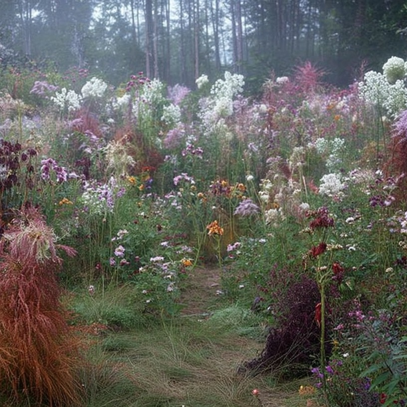
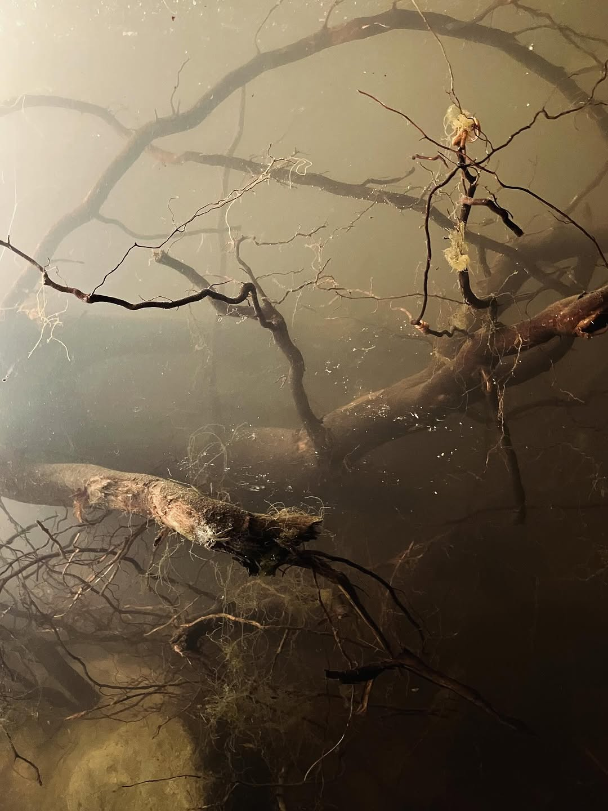

[001]
Le jardin n'est pas pense comme un decor, mais comme une structure vivante: une ecriture lente, conduite par les sols, la lumiere, l'eau et le temps.
V2 / Applied Poetics
Jardins prives, ecosystems, image direction, living matter.
Studio Sebastien Lacomblez / V2
Une version plus editoriale: un rythme de texte, d'image et de distance, pour presenter le studio comme une pratique de direction paysagere entre commande, vivant et culture.
[001]
Le jardin n'est pas pense comme un decor, mais comme une structure vivante: une ecriture lente, conduite par les sols, la lumiere, l'eau et le temps.
[002]

[003]
Du macro au micro, chaque intervention articule sciences naturelles, regard artistique et lisibilite d'usage pour construire des lieux singuliers, tenables, et precis dans leur evolution.
[004]

[005]

[006]
La promesse n'est pas l'effet immediat. C'est la tenue. Une forme de luxe plus silencieuse: coherence du lieu, richesse vegetale, transmission, accompagnement dans le temps long.
[007]

[008]
Contact
Studio Sebastien Lacomblez
sebastienlacomblez.art
+32 000 00 00 00